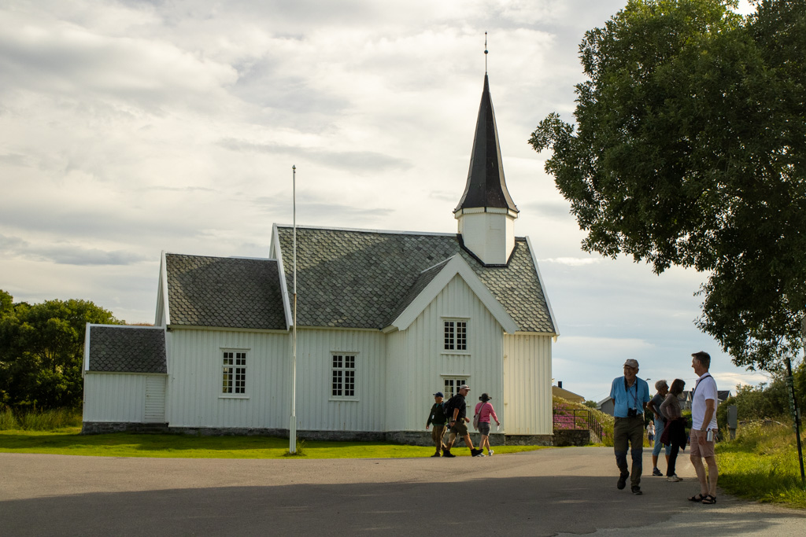

Traena in Norway
Second Day on the Svalbard Line

A short history of Traena
Home to one of Norway’s oldest fishing villages, Træna’s year-round resident population has barely changed since the Stone Age, growing from around 250 people to just 500 today. These permanent residents live on the four main islands – Husøya, where the majority of people live, Selvær, Sanna, and Sandøy.
The deep, cold waters that surround the archipelago are rich with different species of fish throughout the year. It’s long been known that Træna’s rocky islands, with their sheltered inlets, are the ideal base for fishing boats.
Geography and Nature:
- Remote Location: Situated about 33 nautical miles (61 kilometers) west of the mainland, Træna is quite isolated, with the open ocean to the west and Iceland as the next neighbor.
- Archipelago: Træna consists of around 500 islands, islets, and skerries of varying sizes.
- Main Islands: The four main inhabited islands are Husøya (the most populated), Selvær, Sanna, and Sandøy.
- Dramatic Landscapes: The islands feature distinctive steep cliffs, dramatic mountain views rising directly from the sea (like Trænstaven, the highest point at 338 meters), and even white sandy beaches. One beach is locally nicknamed "Waikiki."
- Rich Waters: The surrounding deep, cold waters are abundant with various fish species throughout the year, making it ideal for fishing.
- Birdlife:Træna is home to a variety of seabird species, making it a haven for birdwatchers.

History and Culture:
- Norway's Oldest Fishing Community: Archaeological discoveries dating back at least 9,000 years show that Træna has been a fishing community since the Stone Age. The Træna Museum on Husøya documents this long history.
- Coastal Culture: A strong maritime culture and heritage are evident in the traditional red fishing huts (rorbuer) along the water's edge and the way of life of the islanders.
- Artistic Elements: The local culture expresses itself through art and crafts displayed in gardens, street art on walls, and sculptures in the landscape on Husøya.
- Close-Knit Community: Despite its remote location, Træna has a warm and welcoming community with a mix of long-time residents and newcomers from various nations, giving it a surprisingly urban feel. You'll find amenities like a pub, coffee bar, museum, playground, and fitness center on Husøya.
- Træna Festival: The archipelago is internationally renowned for the Træna Festival, a unique music, art, and culture festival held annually in July on the islands of Husøy and Sanna. It attracts thousands of visitors and features performances in unique locations, including caves.

Things to See and Do:
- Træna Museum: Learn about the islands' fascinating history, including archaeological finds and more recent coastal life.
- Petter Dass Chapel: A modern chapel dedicated to the memory of the 17th-century poet-priest Petter Dass and those lost at sea.
- Trænstaven Mountain: Hike to the top of this iconic mountain on Sanna for breathtaking panoramic views.
- Kirkhelleren Cave: A large cave on Sanna that is often used as a concert venue during the Træna Festival and holds historical significance.
- Explore the Islands: Take the local express boat or rent a boat to visit the different islands, each with its own charm and character.
- Hiking and Biking: Discover the walking paths and lightly trafficked roads on the islands.
- Fishing: Participate in sea fishing trips in the rich waters surrounding Træna.
- Kayaking: Explore the coastline and surrounding waters by kayak.
- Birdwatching: Observe the diverse seabird populations.
- Træna Festival (in July): Experience the unique atmosphere of this internationally recognized festival.
- Træna Culture Walk: Follow a trail on Husøya to discover art, history, and local culture.